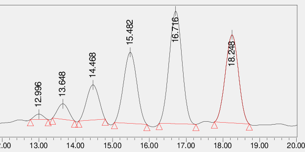
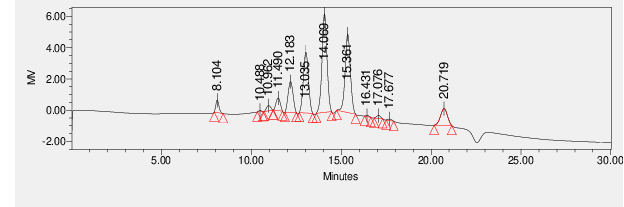

Peer-reviewed article · 2024
Synthesis of Polyglycerol under Superbasic Conditions to Reduce the Severity of the Reaction Conditions
1 Department of Chemical Engineering, Faculty of Industrial Technology, Institut Teknologi Bandung 2 Department of Bioenergy Engineering and Chemurgy, Institut Teknologi Bandung 3 Center for Catalysis and Reaction Engineering, Institut Teknologi Bandung * Corresponding author: Jenny Rizkiana
Abstract
The increasing biodiesel production in Indonesia will affect the supply of glycerol because it is a by-product of the transesterification reaction. Abundant glycerol can provide added value if further processed into higher-value products such as polyglycerol. Polyglycerol is made from the polymerization of glycerol with the help of an alkaline catalyst, such as KOH, but the temperature and reaction time used are very high and long. Therefore, this study aims to increase the conversion of glycerol by adding DMSO to the glycerol and KOH solution to increase the basicity of the mixture, increase the polymerization rate, and decrease the temperature and reaction time. The conversion of glycerol to polyglycerol with the addition of 10 mL DMSO to the KOH and glycerol mixture, giving a DMSO to KOH-glycerol volume ratio of 1:5, with a reaction time of 2 hours and a reaction temperature of 140-150°C was 77%, compared to without the addition of KOH which required a reaction time of 8 hours and a reaction temperature of 260-280 °C resulting in a glycerol conversion of 99%. Adding DMSO, with constant KOH-glycerol volume, affects the polymerization reaction because compared to adding 5 mL DMSO (volume ratio of 1:10), the resulting glycerol conversion is 16%. For the effect of reaction time on the results of glycerol polymerization, 5 mL DMSO shows that the longer the time, the more polyglycerol formed can depolymerize into short-chain oligomers or back into glycerol. The optimum reaction time for 5 mL DMSO is 6 hours because the glycerol conversion is 63%, producing diglycerol and triglycerol with 30% and 17% selectivities, respectively.
01 / Problem
Surplus glycerol, and an energy-intensive route to use it
Why the reaction conditions mattered, in one paragraph of context and one of chemistry.
Indonesia's biodiesel output roughly doubled between 2018 and 2023, and transesterification leaves behind roughly 10% of its mass as crude glycerol. Purification absorbs some of that stream; the rest depresses glycerol prices. Polyglycerol — a family of glycerol oligomers used as emulsifiers (E475, E476) and as a feedstock for cosmetics and lubricants — is a higher-value outlet, but the conventional alkaline condensation route needs 220–260 °C and 8–24 hours to overcome the activation energy of the etherification.
The industrial alternative, the Epicerol® process, routes through epichlorohydrin and therefore through hazardous intermediates. A milder direct route was worth testing: if the basicity of the catalyst system could be raised without raising the temperature, the same chemistry might proceed under less severe conditions.
Contribution of the paper
- Proposes KOH/DMSO as a superbasic medium for glycerol polymerisation. DMSO solvates the potassium cation more strongly than glycerol does, freeing hydroxide ions; the mixture behaves as a stronger base (pKa 30–32) than KOH in glycerol alone.
- Demonstrates that severity can be traded for time. With 10 mL DMSO added to a 50 mL KOH–glycerol mixture, the reaction reaches roughly three-quarters conversion in 2 hours at 140–150 °C — a temperature window set by the boiling point of DMSO — at which KOH alone produced no polyglycerol at all over 8 hours.
- Maps the selectivity trade-off. More DMSO drives conversion and longer chains; less DMSO and a 6-hour window favour diglycerol and triglycerol, which are the fractions of commercial interest for emulsifiers.
- Shows the limit of the approach. Beyond 6 hours the oligomer distribution moves backwards — depolymerisation and side reactions — and an unidentified peak near 19 minutes points to by-products that downstream purification would have to remove.
02 / Method
Experimental approach
A single apparatus, one catalyst loading, two solvent volumes and a chromatographic method — kept deliberately simple so that the comparison stayed clean.
Reaction
Glycerol (99%) and KOH were used as received; DMSO was analytical grade. A constant 50 mL KOH–glycerol mixture was used throughout, with 2 mol% KOH, and DMSO added at 5 mL (DMSO : mixture = 1:10) or 10 mL (1:5). Reactions ran in a round-bottom flask on a hotplate and magnetic stirrer, under a nitrogen blanket, with a Dean–Stark trap and reflux condenser removing the water formed — the equilibrium product that would otherwise stop the condensation. Temperatures were 140–150 °C, 220–230 °C and 260–270 °C, with reaction times of 2 to 8 hours.
Analysis
Oligomer distributions were measured by HPLC (Waters) on a Shodex SUGAR SH1011 column, 2.5 mM H2SO4 mobile phase at 0.6 mL/min and 50 °C. Because pure oligomer standards were not available, quantification used a glycerol standard curve plus peak-area ratios against the glycerol peak — an approach the paper states plainly, including its limits. Retention times were re-baselined against commercial polyglycerol after an HPLC maintenance event shifted the whole peak set.
Kinetics
Conversion against time was fitted to first- and second-order integrated rate laws over the 2–6 hour window; the first-order plot gave the better fit (R² = 0.9383 against 0.8932).
On replication. The article reports one value per condition and no error bars; replicate runs are not described. Any extension of this work would need triplicate reactions and calibrated oligomer standards.

03 / Results
What the experiments showed
Conversion rises with DMSO volume and with time, up to a point; beyond six hours the product distribution reverses.

Glycerol conversion and polyglycerol selectivity at 2 mol% KOH — Tables 2 and 3 of the article, compiled
| DMSO (mL) | T (°C) | t (h) | Conversion (%) | DG (%) | TG (%) | PG4+ (%) | Unknown (%) |
|---|---|---|---|---|---|---|---|
| 0 | 140–150 | 8 | 0.00 | 0.00 | 0.00 | 0.00 | 0.00 |
| 0 | 220–230 | 8 | 23.12 | 6.80 | 0.53 | 3.58 | 12.22 |
| 0 | 260–270 | 8 | 98.80 | 0.23 | 1.01 | 97.56 | 0.00 |
| 5 | 140–150 | 2 | 15.76 | 9.57 | 0.00 | 6.19 | 0.00 |
| 5 | 140–150 | 4 | 33.14 | 24.01 | 6.50 | 2.64 | 0.00 |
| 5 | 140–150 | 6 | 63.32 | 29.91 | 17.38 | 12.71 | 3.33 |
| 5 | 140–150 | 8 | 55.91 | 31.36 | 14.97 | 7.54 | 2.03 |
| 10 | 140–150 | 2 | 71.43 | 22.99 | 12.65 | 32.93 | 2.85 |
DG = diglycerol, TG = triglycerol, PG4+ = tetraglycerol and larger oligomers. Values transcribed from Tables 2 and 3 of the published article; the highlighted row is the DMSO : mixture ratio of 1:5 discussed in the conclusions.
Scroll the table sideways for all columns
Three findings worth carrying forward
DMSO removes the temperature barrier. At 140–150 °C, KOH alone gave no polyglycerol after 8 hours. Adding 5 mL DMSO produced 15.8% conversion in 2 hours; 10 mL produced about three-quarters conversion in the same time. The temperature ceiling became the boiling point of the solvent rather than the activation energy of the reaction.
Selectivity is a function of solvent volume, not only of conversion. The 10 mL system reached higher conversion but pushed the distribution towards tetraglycerol and larger oligomers (32.9% PG4+), while the 5 mL system at 6 hours stayed closer to diglycerol (29.9%) and triglycerol (17.4%) — the short-chain fractions the emulsifier market actually wants.
Longer is not better. Beyond 6 hours conversion fell from 63.3% to 55.9% and the long-chain fraction dropped, consistent with depolymerisation of polyglycerol back to shorter oligomers or glycerol, alongside side reactions that produced an unidentified peak at about 19 minutes.
Analytical reference data


04 / Access
Cite, licence and access
The version of record is open access. Everything on this page is reproduced from it with attribution.
Suggested citation
The PDF as printed carries DOI 10.22146/ajche.12956. The publisher has since re-registered the article during a journal-system migration, so 10.22146/ajche.15164 is the identifier that resolves today.
Licence
- Copyright
- Held by the ASEAN Journal of Chemical Engineering
- Licence
- CC BY-NC 4.0 — attribution required, commercial reuse not permitted
- Figures on this page
- Reproduced from the article under that licence, with figure numbers and source lines retained
- Funding
- Indonesian Palm Oil Fund Management Board (BPDPKS), through the Undergraduate Research Competition 2022 and Palm Oil Research Grants 2020 and 2022
Back to the research record
Research experience, methods, interests and the rest of the output record — including the two academic theses behind this work.